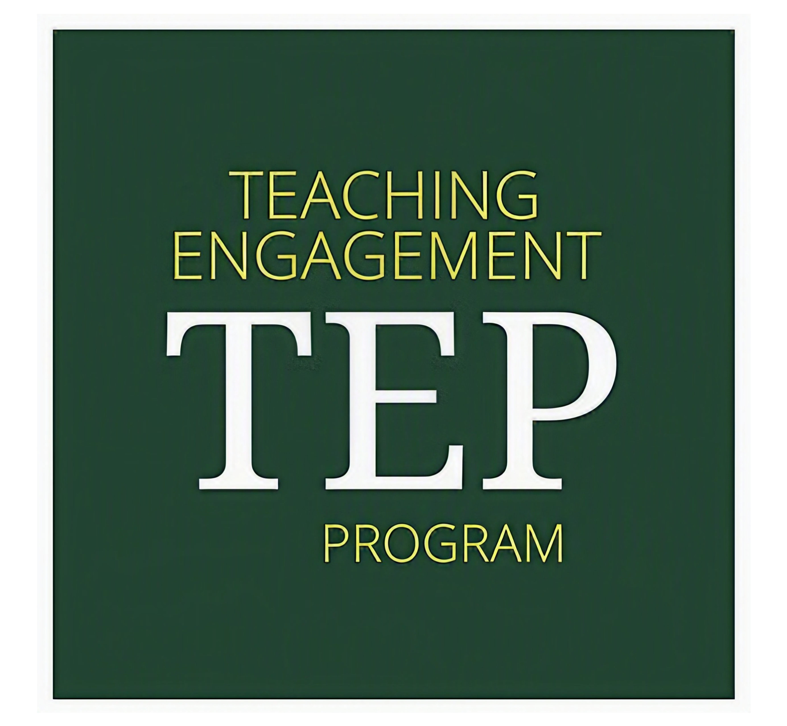

Teaching

I am a member of UO's Graduate Teaching Initiative (GTI). Through this program, I will develop a teaching portfolio that includes course reflections, class observations, sample course syllibi, and a statement of teaching philosophy. Under the guidance of physics and education faculty, I will also complete a capstone project focused on astronomy education in Oregon. See below for some aspects of my portfolio, which I will continue to update as I complete the GTI.
Portfolio (TODO)
I uncovered my passion for teaching as an undergraduate, where I served as a calculus and linear algebra teaching assistant for three years. Below are some of the teaching resources I developed at Penn. Please feel free to use!
- 38 tutorial videos on linear algebra and integral calculus
- Solutions for several Penn MATH 104 final exams: (TODO)
- Infinite Series Survival Guide: (TODO)